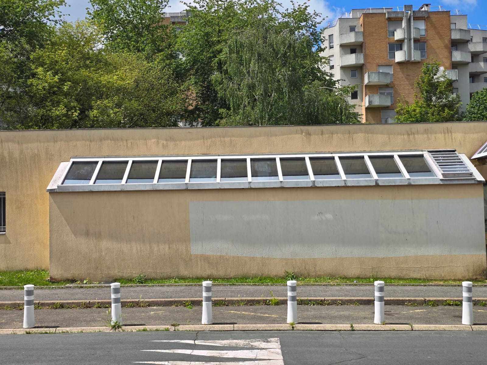
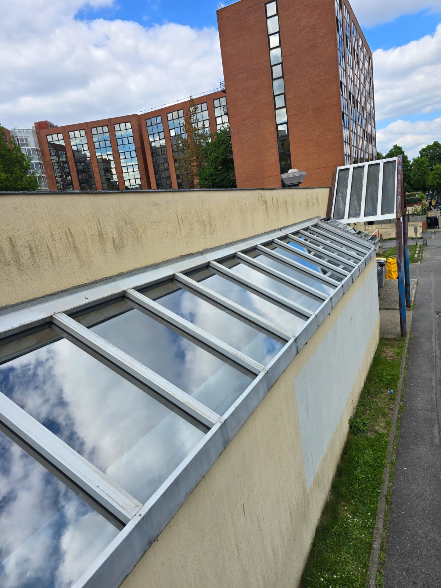
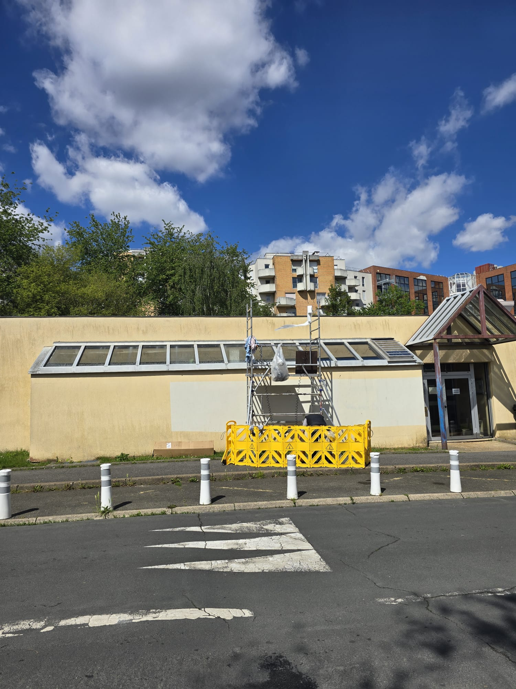
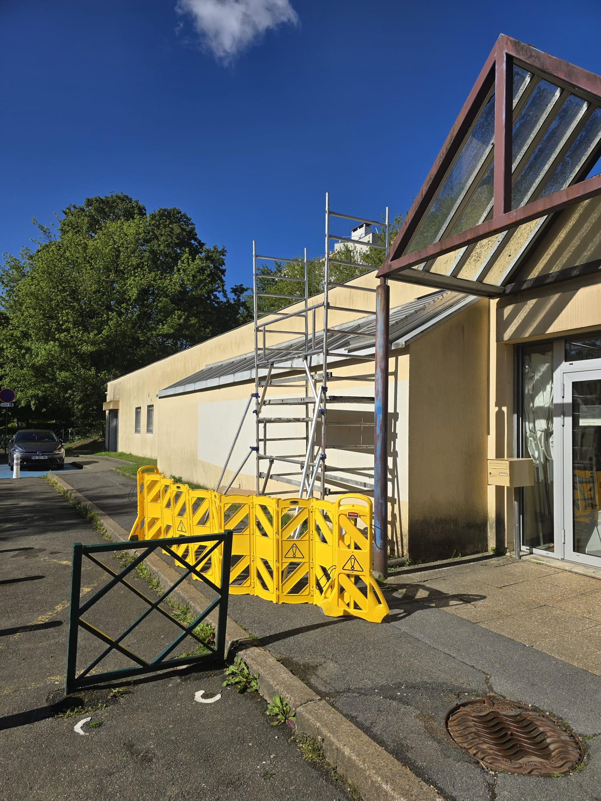
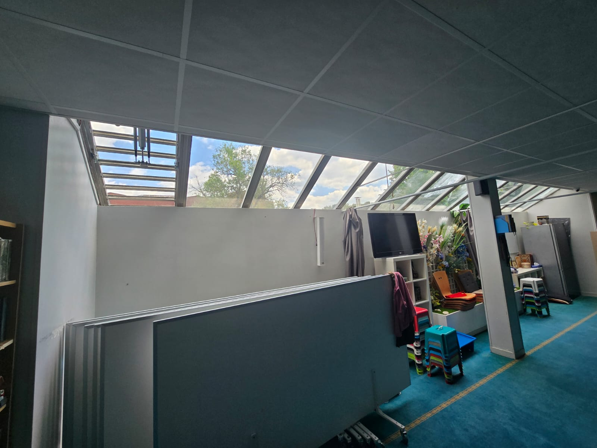

Film solaire sur la verrière inclinée du studio Solarscène.
Studio Solarscène — verrière en sheds longue de plusieurs mètres, fortement exposée, traitée en hauteur depuis l'extérieur. Pose réalisée par DFP France sur échafaudage, en partenariat avec Transmiexpert.

Façade côté rue — verrière en sheds exposée plein soleil · Solarscène
Vue depuis la toiture — panneaux inclinés à traiter
Pose en cours — technicien DFP France sur échafaudage
Échafaudage et signalisation chantier — accès rue sécurisé
Intérieur après pose — confort thermique sans perte de lumièreLe contexte
Solarscène occupe un bâtiment bas dont une façade entière est occupée par une verrière inclinée en sheds longue de plusieurs mètres. Ce type de verrière, courant pour les studios, ateliers et lieux culturels, présente un double inconvénient en saison chaude : surchauffe rapide de l'espace intérieur dès le milieu de matinée, et inconfort marqué pour les occupants en activité sous la verrière.
L'objectif posé par le client : réduire les apports solaires sans assombrir le studio et sans toucher au bâti d'origine. Aucune option de store extérieur ou de remplacement de vitrage n'était envisageable dans le budget et les délais.
La solution technique
Film solaire haute performance, posé côté extérieur sur l'ensemble des panneaux inclinés de la verrière. Les caractéristiques retenues :
- Rejet d'énergie solaire (TSER) : 75 à 80 % selon la teinte
- Filtre UV : 99 % — protection des matériaux et coloris intérieurs
- Transmission lumineuse : conservée à un niveau permettant l'usage du studio en lumière naturelle
- Pose extérieure : adaptée aux verrières inclinées non démontables depuis l'intérieur
L'intervention
Le chantier a nécessité l'installation d'un échafaudage roulant en façade, côté rue. Barrières jaunes de signalisation déployées au sol pour sécuriser le passage des piétons et la circulation devant le studio. Pose réalisée par un technicien DFP France perché en haut de l'échafaudage, panneau par panneau, sur toute la longueur de la verrière.
La pose sur verrière inclinée en extérieur impose des contraintes spécifiques : exposition au vent pendant l'application, gestion de l'eau savonneuse sur surface inclinée, lissage à la raclette dans une position en hauteur. Chantier coordonné avec Transmiexpert, partenaire sur l'opération.
Ce que ce chantier illustre
Les verrières inclinées de studios, ateliers et lieux culturels sont des points chauds typiques : grande surface vitrée, exposition prolongée, pas d'ombrage naturel. Le film solaire posé en extérieur reste la solution la plus rapide et la moins invasive pour traiter ce type de configuration — quelques jours de chantier, zéro modification du bâti, résultat immédiat à la première journée de soleil.
Verrière, atrium, studio sous verre ?
On monte. On pose. Résultat immédiat.
Studios, ateliers, lieux culturels, bureaux à verrière — nous intervenons sur toutes les typologies vitrées en Île-de-France. Diagnostic gratuit par téléphone, devis sous 48 h.